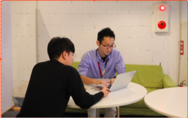
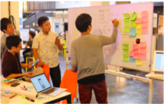
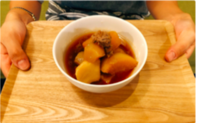
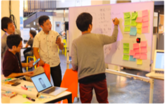

「起業したいけど、いろいろ不安で一歩が踏みだせない・・・」創業支援コンシェルジュによる個別相談を無料で行っています。スタートアップ・フリーランス・スモールビジネス・社会起業家・社内起業家など様々な属性に合わせたセミナー・ワークショップを実施します。


スタートアップ
起業したい人がどうやって起業すればいいか分からない。起業内容は決まっているが、資金調達・開業に必要なあれこれが分からない。
そんなあなたの起業に伴奏できるのがLagoonです。
多種多様なスキルをもったコンシェルジュや、経営の専門店が、あなたの起業をサポートします。
詳細はこちら

地域ビジネス
地域における課題をビジネス的な手法で解決しようとする事業を地域ビジネスと呼びます。
沖縄市コザの商店街も、シャッター通りと呼ばれたが、ここ数年少しづつ活気を取り戻しつつある。そんな地域における資源を活用した地域ビジネスをLagoonでは応援します。
詳細はこちら

飲食ビジネス
飲食店開業を考えた時に、多くの人は出店に必要なメニューを考えがち。
しかし、飲食店開業に必要な準備は他にも沢山あるのが現実です。
食材の原価計算、メニューや看板などのデザイン、集客力など。
Lagoonでは、多種多様なスキルをもったスタッフがそれぞれの特性を活かし、飲食店開業に向けて丁寧にサポートいたします。
詳細はこちら

ソーシャルビジネス
社会課題に対してアプローチする事業をソーシャルビジネスと呼び、SDGsがまさしくのそのアプローチを推奨するものです。
沖縄でもその動きが強くなってきており、貧困、教育、自然、福祉など、沖縄の課題解決が世界の課題解決につながります。
詳細はこちら